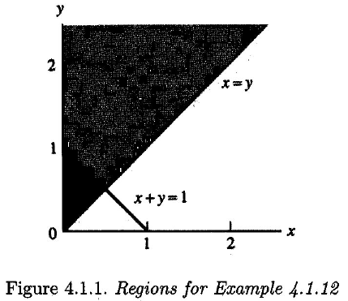
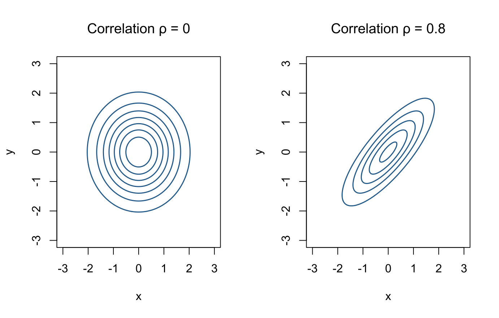
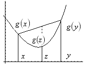

Chapter 4 Multiple Random Variables
This chapter corresponds to chap-4.tex and its six source fragments. It covers joint and marginal distributions, conditional distributions and independence, bivariate transformations, hierarchical models, multivariate normal distributions, and fundamental inequalities. Every source figure is retained. Necessary corrections to integration variables, exponential signs, matrix formulas, and inequalities are recorded in migration_notes.md.
4.1 Joint and marginal distributions and expectations
Definition 4.1 The joint distribution function of \(X,Y\) is
\[ F_{X,Y}(x,y)=P(X\le x,Y\le y). \]
A nonnegative function \(f_{X,Y}\) is a joint density if every Borel set \(A\subset\mathbb R^2\) satisfies
\[ P\{(X,Y)\in A\}=\iint_A f_{X,Y}(x,y)\,dx\,dy. \]
In the discrete case, the joint mass function satisfies
\[ P\{(X,Y)\in A\}=\sum_{(x,y)\in A}p_{X,Y}(x,y). \]
Theorem 4.1 If \(E|g(X,Y)|<\infty\), then
\[ E\{g(X,Y)\}= \begin{cases} \displaystyle\int_{-\infty}^{\infty}\int_{-\infty}^{\infty} g(x,y)f_{X,Y}(x,y)\,dx\,dy,&\text{continuous case},\\[2mm] \displaystyle\sum_{x,y}g(x,y)p_{X,Y}(x,y),&\text{discrete case}. \end{cases} \]
Expand proof
In the continuous case the identity first follows from the definition of a joint density for simple functions. Approximate the positive and negative parts of a general integrable function by nonnegative simple functions to obtain
\[ E\{g(X,Y)\}=\iint_{\mathbb R^2}g(x,y)f_{X,Y}(x,y)\,dx\,dy. \]
In the discrete case, sum the contribution from every possible value of the random vector:
\[ E\{g(X,Y)\}=\sum_{x,y}g(x,y)P(X=x,Y=y). \]
The condition \(E|g(X,Y)|<\infty\) guarantees absolute convergence and permits the required changes in the order of summation or integration.
Marginal densities are obtained by integration:
\[ f_X(x)=\int_{-\infty}^{\infty}f_{X,Y}(x,y)\,dy,\qquad f_Y(y)=\int_{-\infty}^{\infty}f_{X,Y}(x,y)\,dx. \]

Figure 4.1: Source-slide illustration of a joint density and its marginals
The source-slide image is retained above. The interactive Plotly figure below recreates it with the independent standard bivariate normal model \(f_{X,Y}(x,y)=\phi(x)\phi(y)\). The colored surface is the joint density, and the two curves on the vertical boundary planes are the standard-normal marginal densities of \(X\) and \(Y\). Drag to rotate, use the wheel to zoom, and hover over the surface or curves to inspect coordinates and density values.
This interactive figure requires JavaScript. If it cannot be loaded, use the retained source-slide image above.
4.2 Example 4.1.11: a density on the unit square
Let
\[ f(x,y)= \begin{cases} 6xy^2,&0<x<1,\ 0<y<1,\\ 0,&\text{otherwise}. \end{cases} \]
The final results are \(f_X(x)=2x\), \(f_Y(y)=3y^2\) on \((0,1)\), and \(P(X+Y\ge1)=9/10\).
View detailed solution
The marginal densities are
\[ f_X(x)=\int_0^1 6xy^2\,dy=2x,\quad 0<x<1, \]
\[ f_Y(y)=\int_0^1 6xy^2\,dx=3y^2,\quad 0<y<1. \]
For \(P(X+Y\ge1)\), the region is \(A=\{(x,y):0<y<1,\ 1-y\le x\le1\}\), so
\[ \begin{aligned} P(X+Y\ge1) &=\int_0^1\int_{1-y}^1 6xy^2\,dx\,dy\\ &=3\int_0^1y^2\{1-(1-y)^2\}\,dy =\frac9{10}. \end{aligned} \]

Figure 4.2: Integration region for Example 4.1.11 from the source slides
4.3 Example 4.1.12: probability on a triangular support
Let
\[ f(x,y)=e^{-y},\qquad 0<x<y<\infty. \]
The final answer is
\[ P(X+Y\ge1)=2e^{-1/2}-e^{-1}. \]
View detailed solution
This is normalized because \(\int_0^\infty\int_x^\infty e^{-y}\,dy\,dx=1\). The intersection of \(X+Y<1\) with the support is \(0<x<1/2,\ x<y<1-x\). Hence
\[ \begin{aligned} P(X+Y\ge1) &=1-\int_0^{1/2}\int_x^{1-x}e^{-y}\,dy\,dx\\ &=1-\int_0^{1/2}\{e^{-x}-e^{-1+x}\}\,dx\\ &=2e^{-1/2}-e^{-1}. \end{aligned} \]

Figure 4.3: Triangular support and complement region for Example 4.1.12
4.4 Conditional distributions, expectations, and variances
When \(p_X(x)>0\), the discrete conditional mass function is
\[ p_{Y\mid X}(y\mid x)=P(Y=y\mid X=x) =\frac{p_{X,Y}(x,y)}{p_X(x)}. \]
For a continuous pair and \(f_X(x)>0\),
\[ f_{Y\mid X}(y\mid x)=\frac{f_{X,Y}(x,y)}{f_X(x)}. \]

Figure 4.4: Source-slide illustration of conditional-density slices
For \(f(x,y)=e^{-y}\) on \(0<x<y\),
\[ f_{Y\mid X}(y\mid x)=e^{-(y-x)},\quad y>x, \]
so \(E(Y\mid X=x)=x+1\) and \(\operatorname{Var}(Y\mid X=x)=1\).
View detailed solution
\[ f_X(x)=\int_x^\infty e^{-y}\,dy=e^{-x},\qquad x>0, \]
and therefore
\[ f_{Y\mid X}(y\mid x)= \begin{cases} e^{-(y-x)},&y>x,\\ 0,&\text{otherwise}. \end{cases} \]
Thus \(Y\mid X=x\) has the same law as \(x+E\), where \(E\sim\operatorname{Exponential}(1)\), and
\[ E(Y\mid X=x)=x+1,\qquad \operatorname{Var}(Y\mid X=x)=1. \]
The key step is to set \(E=Y-x\). The conditional density shows that \(E\mid X=x\sim\operatorname{Exponential}(1)\), so the shift changes the mean but not the variance.
In general,
\[ E(Y\mid X=x)=\int y f_{Y\mid X}(y\mid x)\,dy, \]
\[ \operatorname{Var}(Y\mid X=x)= \int\{y-E(Y\mid X=x)\}^2f_{Y\mid X}(y\mid x)\,dy. \]
4.5 Independence and its consequences
Definition 4.2 Variables \(X,Y\) are independent if, for every pair of Borel sets \(A,B\),
\[ P(X\in A,Y\in B)=P(X\in A)P(Y\in B). \]
For a pair with a joint density or mass function, independence is equivalent to
\[ f_{X,Y}(x,y)=f_X(x)f_Y(y). \]
Lemma 4.1 If the joint probability function factorizes on the whole support as \(f_{X,Y}(x,y)=g(x)h(y)\), then \(X,Y\) are independent. The functions \(g,h\) need not themselves be normalized probability functions.
Expand proof
Consider the continuous case. By normalization and factorization,
\[ 1=\iint g(x)h(y)\,dx\,dy =\left\{\int g(x)\,dx\right\} \left\{\int h(y)\,dy\right\}. \]
Write \(G=\int g(x)dx\) and \(H=\int h(y)dy\), so \(GH=1\). The marginals are
\[ f_X(x)=g(x)H,\qquad f_Y(y)=h(y)G. \]
Therefore \(f_X(x)f_Y(y)=g(x)h(y)GH=f_{X,Y}(x,y)\), proving independence. Replace integrals by sums in the discrete case.
For example,
\[ f(x,y)=\frac1{384}x^2y^4e^{-x/2-y},\qquad x,y>0, \]
factorizes into an \(x\) part and a \(y\) part, so \(X,Y\) are independent.
Theorem 4.2 If \(X,Y\) are independent and the expectations exist, then
\[ E\{g(X)h(Y)\}=E\{g(X)\}E\{h(Y)\}. \]
If the MGFs exist near zero, then
\[ M_{X+Y}(t)=M_X(t)M_Y(t). \]
Expand proof
Independence gives \(f_{X,Y}(x,y)=f_X(x)f_Y(y)\). In the continuous case,
\[ \begin{aligned} E\{g(X)h(Y)\} &=\iint g(x)h(y)f_X(x)f_Y(y)\,dx\,dy\\ &=\left\{\int g(x)f_X(x)\,dx\right\} \left\{\int h(y)f_Y(y)\,dy\right\}\\ &=E\{g(X)\}E\{h(Y)\}. \end{aligned} \]
The discrete proof is identical with sums. Taking \(g(X)=e^{tX}\) and \(h(Y)=e^{tY}\) gives
\[ M_{X+Y}(t)=E(e^{tX}e^{tY})=M_X(t)M_Y(t). \]
For independent \(X\sim N(\mu,\sigma^2)\) and \(Y\sim N(\gamma,\tau^2)\),
\[ X+Y\sim N(\mu+\gamma,\sigma^2+\tau^2). \]
View detailed solution
\[ M_{X+Y}(t) =\exp\left\{(\mu+\gamma)t+\frac{\sigma^2+\tau^2}{2}t^2\right\}, \]
so \(X+Y\sim N(\mu+\gamma,\sigma^2+\tau^2)\).
4.6 Bivariate transformations and the Jacobian
Let \((X,Y)\) have support \(\mathcal A\) and define \(U=g_1(X,Y),V=g_2(X,Y)\). Suppose the transformation is one-to-one, its inverse is \(x=h_1(u,v),y=h_2(u,v)\), and the Jacobian is nonzero. On
\[ \mathcal B=\{(u,v):(u,v)=(g_1(x,y),g_2(x,y)),\ (x,y)\in\mathcal A\}, \]
the transformed density is
\[ f_{U,V}(u,v)= f_{X,Y}\{h_1(u,v),h_2(u,v)\} \left|\frac{\partial(x,y)}{\partial(u,v)}\right|, \]
where
\[ \frac{\partial(x,y)}{\partial(u,v)} = \begin{vmatrix} \partial x/\partial u&\partial x/\partial v\\ \partial y/\partial u&\partial y/\partial v \end{vmatrix}. \]
Example 4.1 Example 4.3.3 (product of two Beta variables) Let
\[ X\sim\operatorname{Beta}(\alpha,\beta),\qquad Y\sim\operatorname{Beta}(\alpha+\beta,\gamma) \]
be independent, and set \(U=XY,V=X\). The final result is
\[ U\sim\operatorname{Beta}(\alpha,\beta+\gamma). \]
View detailed solution
The inverse is \(x=v,y=u/v\). Since \(0<x<1\) and \(0<y<1\), the transformed support is \(0<u<v<1\). The Jacobian is
\[ J= \begin{vmatrix} 0&1\\ 1/v&-u/v^2 \end{vmatrix} =-\frac1v. \]
On \(0<u<v<1\),
\[ \begin{aligned} f_{U,V}(u,v) ={}&\frac{\Gamma(\alpha+\beta+\gamma)} {\Gamma(\alpha)\Gamma(\beta)\Gamma(\gamma)} v^{\alpha-1}(1-v)^{\beta-1}\\ &\times\left(\frac uv\right)^{\alpha+\beta-1} \left(1-\frac uv\right)^{\gamma-1}\frac1v. \end{aligned} \]
To obtain the marginal density of \(U\), integrate \(v\) from \(u\) to 1. After rearranging the integrand,
\[ \begin{aligned} f_U(u) ={}&\frac{\Gamma(\alpha+\beta+\gamma)} {\Gamma(\alpha)\Gamma(\beta)\Gamma(\gamma)}u^{\alpha-1}\\ &\times\int_u^1 \left(\frac uv-u\right)^{\beta-1} \left(1-\frac uv\right)^{\gamma-1} \frac{u}{v^2}\,dv. \end{aligned} \]
Set
\[ w=\frac{u/v-u}{1-u},\qquad dw=-\frac{u}{v^2(1-u)}\,dv. \]
As \(v\) increases from \(u\) to 1, \(w\) decreases from 1 to 0. Therefore
\[ \begin{aligned} f_U(u) &=\frac{\Gamma(\alpha+\beta+\gamma)} {\Gamma(\alpha)\Gamma(\beta)\Gamma(\gamma)} u^{\alpha-1}(1-u)^{\beta+\gamma-1} \int_0^1w^{\beta-1}(1-w)^{\gamma-1}\,dw\\ &=\frac{\Gamma(\alpha+\beta+\gamma)} {\Gamma(\alpha)\Gamma(\beta+\gamma)} u^{\alpha-1}(1-u)^{\beta+\gamma-1},\qquad 0<u<1. \end{aligned} \]
The last step uses \(B(\beta,\gamma)=\Gamma(\beta)\Gamma(\gamma)/\Gamma(\beta+\gamma)\). This is the density of \(\operatorname{Beta}(\alpha,\beta+\gamma)\).
4.7 Hierarchical models and total expectation
Let a mother fish lay \(Y\sim\operatorname{Poisson}(\lambda)\) eggs, each of which survives independently with probability \(p\). Then \(X\mid Y\sim\operatorname{Binomial}(Y,p)\). For \(x=0,1,\ldots\),
\[ X\sim\operatorname{Poisson}(\lambda p). \]
View detailed solution
\[ \begin{aligned} P(X=x) &=\sum_{y=x}^{\infty}\binom yx p^x(1-p)^{y-x} \frac{e^{-\lambda}\lambda^y}{y!}\\ &=\frac{(\lambda p)^xe^{-\lambda}}{x!} \sum_{y=x}^{\infty}\frac{\{(1-p)\lambda\}^{y-x}}{(y-x)!}\\ &=\frac{(\lambda p)^xe^{-\lambda p}}{x!}. \end{aligned} \]
Thus \(X\sim\operatorname{Poisson}(\lambda p)\), the Poisson-thinning property.
Theorem 4.3 Theorem 4.4.3 (law of total expectation) If the expectation exists,
\[ E(X)=E\{E(X\mid Y)\}. \]
Expand proof
In the continuous case, use \(f_{X,Y}(x,y)=f_{X\mid Y}(x\mid y)f_Y(y)\):
\[ \begin{aligned} E(X) &=\int_{-\infty}^{\infty}\int_{-\infty}^{\infty} x f_{X,Y}(x,y)\,dx\,dy\\ &=\int_{-\infty}^{\infty} \left\{\int_{-\infty}^{\infty}x f_{X\mid Y}(x\mid y)\,dx\right\} f_Y(y)\,dy\\ &=\int_{-\infty}^{\infty}E(X\mid Y=y)f_Y(y)\,dy =E\{E(X\mid Y)\}. \end{aligned} \]
Replace both integrals by sums for the discrete case.
For square-integrable \(X\), \(E(X\mid Y)\) is also the best mean-square predictor of \(X\) among measurable functions of \(Y\):
\[ E\{X-E(X\mid Y)\}^2=\inf_h E\{X-h(Y)\}^2. \]
4.8 Mixture distributions and two hierarchical examples
Definition 4.3 If the conditional law of \(X\) depends on another random quantity that itself has a distribution, the marginal law of \(X\) is a mixture distribution.
Consider
\[ X\mid Y\sim\operatorname{Binomial}(Y,p),\quad Y\mid\Lambda\sim\operatorname{Poisson}(\Lambda),\quad \Lambda\sim\operatorname{Exponential}(\text{scale }\beta). \]
Total expectation gives \(E(X)=pE(Y)=pE(\Lambda)=p\beta\). For \(y=0,1,\ldots\),
The final marginal law of \(Y\) is geometric on \(0,1,\ldots\) with success probability \(1/(1+\beta)\).
View detailed solution
\[ \begin{aligned} P(Y=y) &=\int_0^\infty \frac{\lambda^ye^{-\lambda}}{y!}\frac1\beta e^{-\lambda/\beta}\,d\lambda\\ &=\frac1{\beta y!}\int_0^\infty \lambda^ye^{-\lambda(1+1/\beta)}\,d\lambda\\ &=\left(\frac{\beta}{1+\beta}\right)^y\frac1{1+\beta}. \end{aligned} \]
Thus \(Y\) is geometric on \(0,1,\ldots\) with success probability \(1/(1+\beta)\). Replacing the exponential mixing law by a Gamma law gives a negative-binomial mixture.
A second model is
\[ X_i\mid P_i\sim\operatorname{Bernoulli}(P_i),\qquad P_i\sim\operatorname{Beta}(\alpha,\beta). \]
If \(P_i\) is the drug success probability for patient \(i\) and \(Y=\sum_{i=1}^nX_i\), then
\[ E(Y)=\sum_{i=1}^nE\{E(X_i\mid P_i)\} =\sum_{i=1}^nE(P_i) =n\frac{\alpha}{\alpha+\beta}. \]
4.9 The law of total variance
Theorem 4.4 If second moments exist,
\[ \operatorname{Var}(X) =E\{\operatorname{Var}(X\mid Y)\} +\operatorname{Var}\{E(X\mid Y)\}. \]
Proof.
Expand proof
Write
\[ X-EX=\{X-E(X\mid Y)\}+\{E(X\mid Y)-EX\}. \]
After squaring and taking expectation, the cross term is zero because
\[ E\!\left[\{X-E(X\mid Y)\}\{E(X\mid Y)-EX\}\right]=0. \]
The remaining terms are \(E\{\operatorname{Var}(X\mid Y)\}\) and \(\operatorname{Var}\{E(X\mid Y)\}\).
More explicitly, the cross term is zero because
\[ \begin{aligned} &E\!\left[\{X-E(X\mid Y)\}\{E(X\mid Y)-EX\}\right]\\ &\quad=E\!\left[ \{E(X\mid Y)-EX\} E\{X-E(X\mid Y)\mid Y\}\right]=0, \end{aligned} \]
since \(E\{X-E(X\mid Y)\mid Y\}=0\).
4.10 Multivariate normal distribution
Definition 4.4 An \(m\)-dimensional vector \(\mathbf X=(X_1,\ldots,X_m)^\top\) has distribution \(N_m(\boldsymbol\mu,\boldsymbol\Sigma)\), with positive-definite \(\boldsymbol\Sigma\), if its density is
\[ f_{\mathbf X}(\mathbf x)= \frac{\exp\{-\tfrac12(\mathbf x-\boldsymbol\mu)^\top \boldsymbol\Sigma^{-1}(\mathbf x-\boldsymbol\mu)\}} {(2\pi)^{m/2}|\boldsymbol\Sigma|^{1/2}}. \]
Its multivariate MGF is
\[ M_{\mathbf X}(\mathbf t) =E\{\exp(\mathbf t^\top\mathbf X)\} =\exp\left( \boldsymbol\mu^\top\mathbf t+ \frac12\mathbf t^\top\boldsymbol\Sigma\mathbf t \right), \]
so \(E(\mathbf X)=\boldsymbol\mu\) and \(\operatorname{Var}(\mathbf X)=\boldsymbol\Sigma\).
For \(m=2\),
\[ \boldsymbol\Sigma= \begin{pmatrix} \sigma_1^2&\rho\sigma_1\sigma_2\\ \rho\sigma_1\sigma_2&\sigma_2^2 \end{pmatrix}, \]
\[ \boldsymbol\Sigma^{-1} =\frac1{1-\rho^2} \begin{pmatrix} 1/\sigma_1^2&-\rho/(\sigma_1\sigma_2)\\ -\rho/(\sigma_1\sigma_2)&1/\sigma_2^2 \end{pmatrix}. \]
With \(z_i=(x_i-\mu_i)/\sigma_i\),
\[ f(x_1,x_2)= \frac{\exp\left\{-\dfrac{z_1^2-2\rho z_1z_2+z_2^2} {2(1-\rho^2)}\right\}} {2\pi\sigma_1\sigma_2\sqrt{1-\rho^2}}. \]
Thus \(\operatorname{Cov}(X_1,X_2)=\rho\sigma_1\sigma_2\), and the correlation coefficient is \(\rho\).
grid <- seq(-3, 3, length.out = 120)
draw_bvn <- function(rho, main) {
z <- outer(grid, grid, function(x, y) {
exp(-(x^2 - 2 * rho * x * y + y^2) / (2 * (1 - rho^2))) /
(2 * pi * sqrt(1 - rho^2))
})
contour(grid, grid, z, nlevels = 7, drawlabels = FALSE,
col = "#2C6E9B", lwd = 1.5, xlab = "x", ylab = "y", main = main)
}
old_par <- par(no.readonly = TRUE)
par(mfrow = c(1, 2), family = course_plot_family())
draw_bvn(0, "Correlation ρ = 0")
draw_bvn(0.8, "Correlation ρ = 0.8")
Figure 4.5: Standard bivariate-normal contours for two correlations
par(old_par)4.11 Young, Hölder, and Cauchy–Schwarz inequalities
Lemma 4.2 Young’s inequality (source Lemma 4.7.1) If \(a,b>0\), \(p,q>1\), and \(1/p+1/q=1\), then
\[ \frac{a^p}{p}+\frac{b^q}{q}\ge ab, \]
with equality if and only if \(a^p=b^q\).
Expand proof
For fixed \(b\), consider \(g(a)=a^p/p+b^q/q-ab\). Its stationary point satisfies \(a^{p-1}=b\). Since \(g''(a)=(p-1)a^{p-2}>0\), this is the global minimum. From \(1/p+1/q=1\), the stationary-point condition is equivalent to \(a^p=b^q\). At this point,
\[ g(a)=\frac{a^p}{p}+\frac{a^p}{q}-a^p =a^p\left(\frac1p+\frac1q-1\right)=0. \]
Hence \(g(a)\ge0\), with equality exactly when \(a^p=b^q\).
Theorem 4.5 Hölder’s inequality If the relevant moments are finite,
\[ |E(XY)|\le E|XY| \le\{E|X|^p\}^{1/p}\{E|Y|^q\}^{1/q}. \]
Expand proof
Apply Young’s inequality with
\[ a=\frac{|X|}{\{E|X|^p\}^{1/p}},\qquad b=\frac{|Y|}{\{E|Y|^q\}^{1/q}}, \]
If both denominators are nonzero, apply Young pointwise and take expectations:
\[ E\left[ \frac{|X|}{\{E|X|^p\}^{1/p}} \frac{|Y|}{\{E|Y|^q\}^{1/q}} \right] \le \frac1p+\frac1q=1. \]
Multiplying back the denominators proves Hölder. If either denominator is zero, the corresponding variable is zero almost surely and the result is immediate. Together with \(|E(XY)|\le E|XY|\), this completes the proof.
Setting \(p=q=2\) gives Cauchy–Schwarz:
\[ |E(XY)|\le E|XY| \le\{E(X^2)\}^{1/2}\{E(Y^2)\}^{1/2}. \]
Applying it to \(X-EX\) and \(Y-EY\) yields
\[ \operatorname{Cov}^2(X,Y) \le\operatorname{Var}(X)\operatorname{Var}(Y). \]
4.12 Lyapunov and Minkowski inequalities
Hölder also gives, for \(p>1\),
\[ E|X|\le\{E|X|^p\}^{1/p}. \]
More generally, if \(0<r<p\), Lyapunov’s inequality is
\[ \{E|X|^r\}^{1/r}\le\{E|X|^p\}^{1/p}. \]
Theorem 4.6 Minkowski’s inequality For \(1<p<\infty\),
\[ \{E|X+Y|^p\}^{1/p} \le\{E|X|^p\}^{1/p}+\{E|Y|^p\}^{1/p}. \]
Expand proof
The proof starts from
\[ E|X+Y|^p \le E\{|X||X+Y|^{p-1}\} +E\{|Y||X+Y|^{p-1}\}, \]
and applies Hölder to both terms. Since the conjugate exponent \(q=p/(p-1)\) satisfies \(q(p-1)=p\), cancellation of \(\{E|X+Y|^p\}^{(p-1)/p}\) gives the result.
If \(E|X+Y|^p=0\), the result is immediate. Otherwise division by this positive factor gives
\[ \{E|X+Y|^p\}^{1/p} \le \{E|X|^p\}^{1/p}+\{E|Y|^p\}^{1/p}. \]
4.13 Convex functions and Jensen’s inequality
Definition 4.5 A function \(g\) is convex if, for all \(x,y\) and \(0<\lambda<1\),
\[ g\{\lambda x+(1-\lambda)y\} \le\lambda g(x)+(1-\lambda)g(y). \]
It is concave if \(-g\) is convex.

Figure 4.6: A chord lies above the graph of a convex function (source slide)
For a convex function, the secant slope
\[ g_x^\perp(y)=\frac{g(y)-g(x)}{y-x} \]
is nondecreasing in \(y\). Consequently, the supporting line determined by \(D^+g(x)=\lim_{y\downarrow x}g_x^\perp(y)\) lies below the graph:
\[ g(z)\ge g(x)+D^+g(x)(z-x). \]
Expand proof
If \(x<y'<y\), set \(\lambda=(y-y')/(y-x)\), so \(y'=\lambda x+(1-\lambda)y\). Convexity gives
\[ g(y')\le \frac{y-y'}{y-x}g(x)+ \frac{y'-x}{y-x}g(y). \]
Rearranging and dividing by the positive number \(y'-x\) yields
\[ \frac{g(y')-g(x)}{y'-x} \le \frac{g(y)-g(x)}{y-x}. \]
The other orderings are analogous, so the secant slope is nondecreasing in its second endpoint. Letting that endpoint tend to \(x\) gives the supporting-line inequality determined by the right derivative.
Theorem 4.7 Jensen’s inequality If \(g\) is convex and the expectations exist,
\[ E\{g(X)\}\ge g(EX). \]
Expand proof
Let \(m=E(X)\) and choose a supporting line \(\ell(x)=a+bx\) at \(m\), so \(g(x)\ge\ell(x)\) and \(g(m)=\ell(m)\). Since expectation preserves inequalities,
\[ E\{g(X)\}\ge E\{a+bX\} =a+bE(X)=\ell(m)=g(m)=g\{E(X)\}. \]
For linear \(g\), equality follows directly from linearity of expectation. In general, equality requires \(X\) to lie almost surely where \(g\) agrees with the supporting line.

Figure 4.7: Supporting-line interpretation of Jensen’s inequality (source slide)
For twice differentiable \(g\), convexity is equivalent to \(g''(x)\ge0\). Equality always holds for a linear function; in general, \(X\) must lie almost surely where \(g\) agrees with a supporting line.
4.14 Two applications of Jensen’s inequality
For nonnegative \(a_1,\ldots,a_n\), define the arithmetic, geometric, and harmonic means:
\[ a_A=\frac1n\sum_{i=1}^na_i,\qquad a_G=\left(\prod_{i=1}^na_i\right)^{1/n},\qquad a_H=\left(\frac1n\sum_{i=1}^n\frac1{a_i}\right)^{-1}. \]
Concavity of the logarithm and convexity of the reciprocal give
\[ a_H\le a_G\le a_A. \]
View detailed solution
Let \(I\) be uniform on \(\{1,\ldots,n\}\) and set \(X=a_I\). Since \(\log\) is concave, Jensen’s inequality gives
\[ \frac1n\sum_{i=1}^n\log a_i \le \log\left(\frac1n\sum_{i=1}^na_i\right). \]
Exponentiating yields \(a_G\le a_A\). Apply the same geometric-mean versus arithmetic-mean inequality to \(1/a_i\):
\[ \left(\prod_{i=1}^n\frac1{a_i}\right)^{1/n} \le\frac1n\sum_{i=1}^n\frac1{a_i}. \]
Taking reciprocals gives \(a_H\le a_G\).
If \(f,g\) are densities and \(X\sim f\), then
\[ E_f\!\left[\log\frac{g(X)}{f(X)}\right] \le\log E_f\!\left[\frac{g(X)}{f(X)}\right]=0, \]
so
\[ E_f\{\log g(X)\}\le E_f\{\log f(X)\}. \]
View detailed solution
Where \(g(x)>0\) and \(f(x)>0\), define \(R(X)=g(X)/f(X)\). Concavity of the logarithm gives
\[ E_f\{\log R(X)\}\le\log E_f\{R(X)\}. \]
But
\[ E_f\{R(X)\}=\int \frac{g(x)}{f(x)}f(x)\,dx =\int g(x)\,dx=1. \]
Thus \(E_f\{\log g(X)-\log f(X)\}\le0\), which rearranges to the stated inequality.
This is equivalent to nonnegativity of Kullback–Leibler divergence and helps explain why maximum likelihood favors the true model in expectation.
4.15 Chapter summary
The joint law determines marginals, conditionals, and expectations of functions. Independence factorizes probability functions, expectations, and MGFs. Jacobians handle multivariate transformations. Total expectation and total variance separate hierarchical models into conditional and mixing layers. The multivariate normal distribution summarizes linear structure through a mean vector and covariance matrix, while Hölder, Minkowski, and Jensen provide fundamental bounds for later statistical arguments.
After-class prompt: Recompute the region in Example 4.1.11, verify the Poisson-thinning property, and use Jensen’s inequality to prove that the geometric mean does not exceed the arithmetic mean.
Reference: Casella and Berger, Statistical Inference, 2nd ed., Chapter 4.